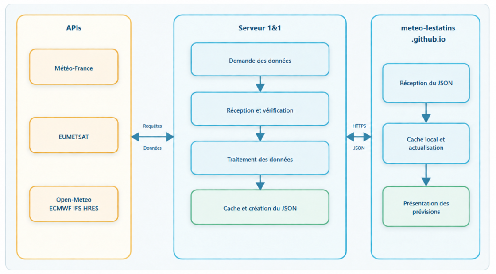

Résolution des API utilisées
Détails techniques des API
Radar v1 Météo-France
- Catalogue :
DPRadar/v1/mosaiques/METROPOLE/observations/LAME_D_EAU. - Produit demandé : lame d’eau nationale avec une maille de 500 m.
- Format lu : HDF5.
- La projection du fichier est convertie vers la longitude et la latitude avec
proj4. - Les valeurs de gain, décalage, absence de donnée et valeur indétectable sont appliquées avant analyse.
- Le serveur extrait uniquement la zone utile autour des Tatins.
- Les pixels significatifs sont regroupés en composantes connexes pour identifier des cellules pluvio-orageuses.
- Pour chaque cellule sont estimés le centre pondéré par l’intensité, la surface, le rayon, la pluie moyenne et la pluie maximale.
- Deux images successives servent à estimer le déplacement, extrapolé jusqu’à 60 minutes.
- Lorsqu’une cellule devient significative, les volumes multipolarisés PAM des radars de Moucherotte et de Colombis sont également demandés. Les variables ZH, ZDR, ρHV et l’écart-type de réflectivité sont croisées sur plusieurs élévations et sous deux angles.
- Cette analyse secondaire est expérimentale, séquentielle et exécutée à basse priorité ; son indisponibilité ne bloque jamais la mosaïque principale.
Le risque de passage, le potentiel orageux, la pluie intense et la grêle sont des indicateurs locaux dérivés. Ce ne sont pas des bulletins officiels.
PIAF Météo-France
- Service Météo-France : WCS 2.0.1.
- Le serveur lit
GetCapabilitieset choisit la couverturePT5Mla plus récente disponible. Le taux de précipitation PIAF, exprimé sur une heure, est intégré sur cinq minutes (÷ 12) avant le calcul des cumuls. - Une valeur ponctuelle est demandée aux coordonnées des Tatins avec
GetCoverage. - Trente-six échéances espacées de cinq minutes sont récupérées, de +5 min à +3 h.
- Les valeurs XML/GML sont converties en cumuls de précipitations en millimètres.
- Quatre requêtes peuvent être traitées simultanément afin de ne pas saturer l’API.
- Les probabilités PE-AROME disponibles sont associées aux intervalles PIAF.
AROME Météo-France
- Service Météo-France : WCS 2.0.1.
- Le dernier cycle cohérent possédant tous les champs nécessaires est sélectionné.
- Champs utilisés : température à 2 m, précipitations, vent U/V à 10 m, rafales, nébulosité totale et densité moyenne de foudre prévue sur trois heures.
- Température, pluie et signal de foudre sont récupérés à l’heure.
- La densité de foudre est convertie en éclairs pour 100 km² par heure. Un signal orageux est retenu à partir de 0,01 lorsque le cumul de pluie AROME sur la même fenêtre de trois heures atteint également 0,1 mm ; les traces positives inférieures ne suffisent plus à afficher un éclair.
- Vent, rafales et nuages sont échantillonnés toutes les trois heures puis interpolés pour l’affichage horaire.
- Conversions principales : kelvins vers degrés Celsius, mètres par seconde vers kilomètres par heure et fraction nuageuse vers pourcentage.
- Les composantes U/V sont converties en vitesse et direction du vent.
- Résultat : prévision déterministe normalisée sur 48 heures, avec un signal orageux dérivé des champs de foudre et de précipitations AROME.
PE-AROME Météo-France
- Ensemble Météo-France comportant jusqu’à 25 membres.
- Chaque membre possède son propre service WCS.
- Les membres permettent d’estimer la probabilité de précipitations et la dispersion des scénarios.
- La probabilité de pluie est échantillonnée toutes les trois heures avec un seuil de 0,1 mm.
- Les intervalles d’incertitude de température, vent, rafales et nuages sont calculés sur des points espacés de six heures.
- L’acquisition est progressive : son avancement est conservé pour éviter de recommencer tous les membres.
ARPEGE Météo-France
- Service déterministe Météo-France WCS 2.0.1.
- Les échéances disponibles sont déterminées par
GetCapabilitiesetDescribeCoverage. - Champs utilisés : température, vent U/V, rafales, nuages, précipitations, énergie convective disponible maximale et précipitations convectives.
- Au-delà de la portée d’AROME, le signal orageux est retenu lorsque l’énergie convective et les précipitations convectives prévues sont simultanément significatives.
- Les résultats alimentent les quatre jours suivant la prévision AROME.
- Les mêmes conversions d’unités et contrôles de cohérence qu’AROME sont appliqués
PE-ARPEGE Météo-France
- Ensemble Météo-France comportant jusqu’à 35 membres.
- Les précipitations sont téléchargées sous forme de GeoTIFF.
- Le serveur repère dans chaque grille le pixel contenant les coordonnées des Tatins.
- Une date n’est retenue que si au moins 20 membres sont disponibles.
- Les membres servent à calculer les probabilités et intervalles de confiance sur quatre jours.
- Cette acquisition plus lourde fonctionne en arrière-plan et peut être désactivée par la configuration serveur.
Vigilance Météo-France
- API
DPVigilance/v1/cartevigilance/encoursau format JSON. - Les phénomènes, périodes et couleurs du département configuré sont extraits pour l’alerte affichée sur le site.
EUMETSAT MTG Lightning Imager
- Collection utilisée :
EO:EUM:DAT:0691. - Authentification OAuth 2.0 par
client_credentials. - Le catalogue fournit le produit récent et son lien NetCDF4.
- NetCDF4 reposant sur HDF5, le fichier est lu avec
h5wasm. - Les éclairs sont filtrés dans un rayon local, puis convertis en distance et position par rapport aux Tatins.
- Ces observations corroborent l’activité électrique des cellules suivies par le radar.
Open-Meteo
- API JSON sans clé.
- Données demandées : température, précipitations, probabilité de pluie, code météo, nébulosité, vent, rafales, lever et coucher du soleil.
- Les codes météo 95 à 99 fournissent le signal orageux Open-Meteo utilisé dans les frises et la synthèse.
- Pas de temps utilisés : 15 minutes, horaire et quotidien.
- Fuseau demandé :
Europe/Paris. - Cette source sert de comparaison et de repli.
Cache et fréquence d’actualisation
| Donnée | Durée cible du cache serveur |
|---|---|
| PIAF | 4 min |
| Radar | 4 min |
| Radar polarimétrique PAM | cycle de 5 min, uniquement lors d’une activité significative |
| Foudre EUMETSAT | 5 min |
| AROME | 60 min |
| PE-AROME, probabilités | 3 h |
| PE-AROME, ensemble | 6 h |
| Vigilance | 30 min |
| Open-Meteo | 30 min |
| ARPEGE et PE-ARPEGE | 6 h |
Lorsqu’une actualisation échoue ou reste trop incomplète, la dernière acquisition complète est conservée et continue d’être servie, même après l’expiration de sa durée cible, jusqu’à ce qu’un remplacement exploitable soit disponible.
Nowcasting
Le nowcasting décrit le temps présent et son évolution probable à très courte échéance. Il est ici designé pour les 3h suivantes environ pour la pluie et la prochaine heure pour le déplacement des cellules pluvio-orageuses.
Données réunies
Le schéma combine cinq sources complémentaires :
- Radar v1 indique où il pleut réellement et avec quelle intensité au moment de l’observation.
- PIAF fournit les cumuls de pluie prévus toutes les cinq minutes jusqu’à trois heures.
- EUMETSAT LI indique les éclairs observés autour des cellules et confirme leur activité électrique.
- PAM Météo-France, lorsque l’analyse est déclenchée, aide à distinguer un signal compatible avec la grêle d’une pluie forte observée par les deux radars voisins.
- AROME et Open-Meteo apportent les signaux d’orage prévus dans les trois prochaines heures, indépendamment de la détection immédiate des cellules radar.
PE-AROME peut ajouter une probabilité de précipitations aux créneaux PIAF. AROME apporte le contexte météorologique général, mais ne pilote pas directement la trajectoire dessinée des cellules.
Détection des cellules
- La mosaïque radar est découpée autour des Tatins.
- Les pixels dépassant le seuil de pluie significative sont retenus.
- Les pixels voisins sont réunis en ensembles continus.
- Chaque ensemble suffisamment cohérent devient une cellule identifiée par une lettre.
- Son centre est pondéré par l’intensité de la pluie : les zones les plus actives comptent davantage.
- Sa surface, son rayon estimé, sa pluie moyenne et sa pluie maximale sont calculés.
La carte conserve la forme radar réellement détectée, y compris ses creux et ses éventuelles parties discontinues. Le rayon équivalent reste calculé pour certains indicateurs, mais le bord, le contact avec Les Tatins, le passage et l’ETA utilisent le contour réel plutôt qu’un cercle plein. Cette forme demeure une interprétation de pixels radar, pas une frontière météorologique exacte.
Suivi et trajectoire
Les cellules de deux images radar successives sont rapprochées selon leur position, leur forme et leur intensité. Cela permet d’estimer une direction et une vitesse de déplacement.
La trajectoire est projetée jusqu’à 60 minutes lorsque le déplacement est suffisamment mesurable. Elle part du bord avant de la cellule ; son halo s’élargit progressivement pour matérialiser l’incertitude. Un cône n’est affiché que lorsqu’une ETA est calculable, afin de ne pas donner une direction artificielle à une cellule stationnaire ou mal suivie.
La distance affichée est celle entre le contour réel de la cellule et Les Tatins, et non celle depuis son centre. Elle vaut zéro uniquement lorsqu’un pixel de la forme recouvre effectivement le point ; une cavité dans la cellule n’est donc plus remplie artificiellement. La vue passe automatiquement de 20 à 60 km lorsqu’une cellule ou son ETA sortirait du champ, tandis que le choix manuel d’échelle est mémorisé.
Intensité générale
Les cinq points orange combinent :
- l’intensité de pluie mesurée par le radar et le risque de pluie intense ;
- le risque de grêle calculé pour la cellule ;
- le nombre d’éclairs détectés à proximité par EUMETSAT LI.
Ces composantes sont ramenées sur une échelle de 0 à 5, puis pondérées : 40 % pluie, 30 % grêle et 30 % foudre. Les détails restent disponibles dans la fiche de la cellule.
Risque orageux à trois heures
Le premier indicateur de la synthèse à trois heures assemble des informations de nature différente sur une même échelle de prudence :
- une vigilance Météo-France Orages orange ou rouge active impose un minimum de 1/5 ;
- une seule source parmi Open-Meteo et Météo-France prévoyant un orage dans les trois prochaines heures donne 1/5 ;
- les deux sources prévoyant un orage dans les trois prochaines heures donnent 2/5 ;
- toute probabilité de passage nowcasting supérieure à zéro peut également produire 1/5 sous 20 % et 2/5 entre 20 et 39 %, indépendamment de l’intensité de la cellule ;
- le nowcasting réserve les niveaux 3/5, 4/5 et 5/5 aux probabilités maximales de passage respectivement comprises entre 40–59 %, 60–79 % et 80–100 %.
La proximité géométrique d’une cellule ne suffit plus à imposer le niveau 2. Les différents signaux agissent comme des planchers : le niveau le plus élevé est affiché.
Risque orageux de la frise semaine
La graduation repose sur les deux signaux orageux prévisionnels disponibles, Open-Meteo et Météo-France. AROME fournit le signal jusqu’à 48 heures, puis ARPEGE prolonge l’analyse convective sur la prévision semaine Météo-France.
Dans la vue d’un modèle individuel, l’échéance n’intervient pas. Un signal resté stable dans les prévisions récentes vaut 5/5. Chaque changement récent retire un point, sans jamais descendre sous 3/5. En l’absence d’un historique suffisant, le niveau reste également à 3/5.
La synthèse conserve une graduation distincte fondée sur le nombre de sources, l’échéance et la stabilité :
| Échéance du jour concerné | Une source | Deux sources |
|---|---|---|
| De 3 à 6 jours | 1/5 | 3/5 |
| À deux jours | 2/5 | 4/5 |
| Aujourd’hui ou demain | 3/5 | 5/5 |
L’historique récent des prévisions module ensuite la convergence de la synthèse : un changement du signal orage retire un point et des apparitions ou disparitions répétées en retirent deux. Dans les vues propres à chaque source, l’éclair matérialise directement son signal. Dans la synthèse 48 h, il est affiché dès que le risque hebdomadaire atteint 3/5.
Risques de pluie intense et de grêle
Ces deux risques sont des estimations calculées par le site à partir du radar, et non des probabilités fournies directement par Météo-France.
- Pluie intense : le score dépend à 90 % de l’intensité maximale relevée dans la cellule, avec une progression rapide autour de 12 mm/h, et à 10 % de sa probabilité de passage aux Tatins. Il décrit donc surtout la puissance de la cellule ; une cellule très pluvieuse qui passe à côté peut conserver un score élevé.
- Grêle : sans donnée polarimétrique exploitable, le score combine l’intensité radar au-delà de 18 mm/h et 18 % de l’indice convectif, avec un plafond prudent de 65 %. Lorsque Moucherotte et Colombis montrent sur plusieurs élévations une signature cohérente de forte réflectivité, de ZDR faible et de baisse de ρHV, le score peut être confirmé jusqu’à 90 %. À l’inverse, une signature cohérente de pluie forte réduit le faux signal de grêle produit par l’intensité seule.
Ce résultat reste un indice expérimental et non une observation certaine de grêle au sol. La température en altitude, la hauteur de l’isotherme 0 °C, l’énergie convective et le cisaillement restent nécessaires pour améliorer la prévision à trois heures et la distinction entre neige, grésil et grêle.
Risque de passage
Le risque de passage estime la possibilité que la trajectoire et sa zone d’incertitude atteignent Les Tatins. Il tient compte de la distance au bord, de la direction, de la vitesse, des positions projetées, de la largeur de la cellule et de l’incertitude.
Une cellule intense peut présenter un faible risque local si elle s’éloigne ou passe à côté. Une cellule plus faible peut au contraire avoir un risque de passage élevé si elle se dirige vers Les Tatins.
Association entre le radar et PIAF
Le radar mesure un taux instantané en millimètres par heure. Pour le comparer à PIAF, ce taux est converti en cumul équivalent sur cinq minutes, puis rapproché des mêmes échéances.
Le radar complète PIAF : le premier décrit l’observation et le déplacement récent ; le second fournit une prévision de précipitations jusqu’à trois heures. Lorsqu’une cellule recouvre réellement Les Tatins (passage calculé à 100 %), le radar devient prioritaire pendant les quinze premières minutes, puis son poids diminue jusqu’à une heure. Cet amendement ne réduit jamais le cumul prévu par PIAF et alimente à l’identique la synthèse 3 h et les périodes correspondantes de la frise 48 h.
La frise à trois heures superpose le cumul PIAF et l’amendement issu du déplacement radar sans les compter deux fois. Elle conserve les différents passages d’une cellule discontinue, affiche les durées d’ETA, signale un pic imminent et colore les fortes pluies. Les épisodes orageux de plusieurs cellules peuvent se succéder sur la même frise. La synthèse 48 h reprend les mêmes échéances et conserve le modèle pluvieux même lorsqu’aucun signal orageux ne l’accompagne.
Actualisation et limites
- Le radar est normalement réactualisé toutes les quatre minutes environ.
- Une cellule qui n’est plus retrouvée peut être conservée brièvement comme « fin de détection ».
- Une cellule peut se renforcer, faiblir, fusionner ou se diviser entre deux images.
- Le relief peut influencer la mesure radar et l’évolution réelle des précipitations.
- L’extrapolation suppose que le mouvement récent reste assez stable pendant l’heure suivante.
- Les signaux AROME et ARPEGE restent des prévisions : ils ne constituent ni une observation ni une localisation précise d’une cellule.
- Le cercle, la trajectoire, l’heure d’arrivée et les risques sont des calculs persos à éventuellement affiner.
Techniques / Sécurité / Confidentialité
Architecture

Pour des raisons techniques, de sécurité et de confidentialité, meteo-lestatins.github.io demande les données protégées à un serveur personnel 1&1. C’est ce serveur qui contacte Météo-France et EUMETSAT avec les clés privées, contrôle et met en cache leurs données, puis renvoie au site un JSON prêt à afficher. Les prévisions publiques sont récupérées sans clé privée. Les clés des fournisseurs ne sont jamais incluses dans la page publique.
Interface publique
La page principale réunit une synthèse des trois prochaines heures, une frise détaillée de 48 heures, le nowcasting cartographique et la prévision semaine. Les périodes semaine peuvent couvrir le matin, l’après-midi, la nuit ou la journée entière ; vent et rafales y sont agrégés sur toute la période plutôt qu’à une seule heure. Les rafales utilisent les couleurs des niveaux jaune, orange et rouge. L’interface s’adapte aux écrans étroits, mémorise l’échelle choisie pour le radar et recharge automatiquement les nouveaux fichiers de la PWA lorsqu’une version est activée.
Les survols restent volontairement courts : ils donnent l’échéance, la durée ou le cumul utile, tandis que les détails complets des cellules restent dans le nowcasting. Le cumul orange correspond à l’apport du radar au cumul PIAF, pas à une deuxième prévision indépendante.
Administration
L’administration est protégée côté Apache et n’est jamais publiée sur GitHub Pages. Elle est organisée en quatre onglets :
- Stats : visiteurs uniques, pages vues et périodes de consultation. L’adresse utilisée pour ouvrir l’administration est immédiatement exclue de toutes les statistiques ; seules des empreintes irréversibles sont manipulées et aucune adresse IP n’est affichée ou conservée en clair.
- API : état, fraîcheur, progression et erreurs des fournisseurs, diagnostic technique et relance manuelle. La date de péremption du jeton Météo-France et son alerte anticipée se règlent ici.
- BDD : santé de l’archivage, nombre et volume quotidien des trames, taille des sources et des exports, espace libre du serveur, création, téléchargement et suppression des sauvegardes.
- Communication : destinataire des notifications, alertes d’interruption ou de retour à la normale, notifications de sauvegarde disponible et rédaction des News.
La rédaction des News n’enregistre plus automatiquement chaque frappe. Le bouton Prévisualisation affiche le rendu Markdown sécurisé exactement comme il apparaîtra sur le site ; Enregistrer / publier effectue ensuite l’écriture explicite.
Relecture radar privée
La relecture historique est protégée par les mêmes règles Apache que l’administration. Une fenêtre ponctuelle permet de choisir clairement la date, l’heure de début et l’heure de fin, dans une limite de six heures. La frise de sélection colore les périodes de données manquantes, de pluie forte et de signal orageux ; elle ne montre ni nom interne de base ni état technique des trames.
L’index des jours disponibles est enrichi au fil des sauvegardes. La page n’a donc plus à relire toute la base à chaque ouverture ; une maintenance légère peut compléter l’index en arrière-plan. La génération demandée utilise un worker unique limité à 50 % de CPU, affiche sa progression et conserve son résultat trente minutes en mémoire. Les images recalculées ne deviennent pas une seconde archive permanente : les trames radar sources restent la référence. Pendant la lecture, le bandeau reste fixé sous l’en-tête, le curseur représente uniquement la progression temporelle et le reste de la page demeure défilable.
Sauvegardes et conservation
Les trames radar sont recadrées dans un rayon de 100 km autour des Tatins, soit un diamètre de 200 km, puis ajoutées au fil de l’eau à des fichiers hebdomadaires compressés. Les instantanés des API utiles sont également archivés en continu et dédupliqués.
Une sauvegarde téléchargeable regroupe une fenêtre glissante de sept jours : trames radar, instantanés API, caractéristiques polarimétriques et couples d’apprentissage. Sa génération est séquentielle, utilise une compression modérée et n’altère jamais les fichiers sources. Une notification par e-mail peut annoncer que l’export est disponible ; sa suppression depuis l’administration ne supprime pas les sources.
Les sources radar et API âgées de plus de trente jours ne sont purgées que si une sauvegarde couvrant entièrement leur période existe. L’état de santé surveille le retard de l’archivage radar : après une interruption durable, un e-mail est envoyé, puis un second annonce le retour à la normale. Les volumes quotidiens, la taille des sauvegardes et l’espace disque libre permettent de détecter une dérive avant saturation du serveur.
Langages et bibliothèques
- Serveur : JavaScript moderne sous Node.js, en modules ESM.
- meteo-lestatins.github.io : HTML, CSS et JavaScript natifs, sans framework frontal.
- Cartographie : Leaflet, distribué localement avec le site.
- GeoTIFF : bibliothèque
geotiffpour lire certaines grilles météorologiques. - HDF5 / NetCDF4 :
h5wasmpour les mosaïques radar et les produits foudre. - Projections cartographiques :
proj4pour convertir les coordonnées radar vers WGS84.
Analyse polarimétrique et apprentissage à trois heures
La mosaïque nationale reste la source légère utilisée pour détecter, dessiner et suivre les cellules. Si elle révèle une activité significative, le serveur télécharge ponctuellement les huit tours d’antenne PAM de Moucherotte et de Colombis. Il décode d’abord la réflectivité de tous les tours, puis limite l’analyse détaillée aux quatre élévations les plus basses de chaque radar. Un seul décodage tourne à la fois dans un worker séparé, avec une priorité système basse et de courtes pauses entre les produits, afin de préserver le service web et le processeur.
Les données brutes PAM de ces périodes actives sont conservées pendant 24 heures pour permettre un recalcul après une correction de l’algorithme, puis supprimées automatiquement. Les indicateurs dérivés, beaucoup plus petits, sont archivés par semaine sans limite liée à ce tampon : fractions de pixels compatibles avec grêle ou pluie, élévations, réflectivité maximale, accord entre radars et niveau de confiance.
En parallèle, chaque observation radar crée deux types d’enregistrements destinés à un futur modèle :
- un état initial horodaté avec cellules, intensités, formes, trajectoires, risques, polarimétrie et contexte PIAF/AROME/Open-Meteo disponibles à cet instant ;
- un résultat observé horodaté avec pluie maximale, pluie intense et éventuelle signature polarimétrique de grêle.
Ces séries permettent ensuite d’associer chaque état initial aux résultats réellement observés de +5 minutes à +3 heures. Le but du futur entraînement est de prévoir l’arrivée aux Tatins d’une pluie intense ou d’une cellule grêligène, pas seulement de la reconnaître lorsqu’elle est déjà présente. Les archives hebdomadaires et les sauvegardes glissantes de sept jours restent indépendantes du calcul en temps réel.
La polarimétrie aide aussi à caractériser les hydrométéores solides, mais une estimation spécifique de neige nécessitera encore le croisement avec le profil thermique et l’isotherme 0 °C. Jusqu’à validation sur un nombre suffisant de cas réels, les scores restent signalés comme expérimentaux et la trajectoire continue d’être calculée à partir de la géométrie de la mosaïque.